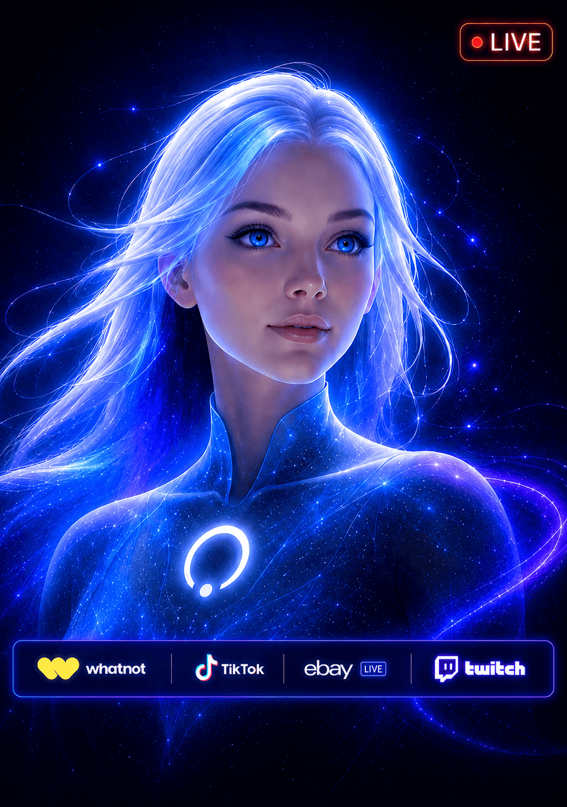
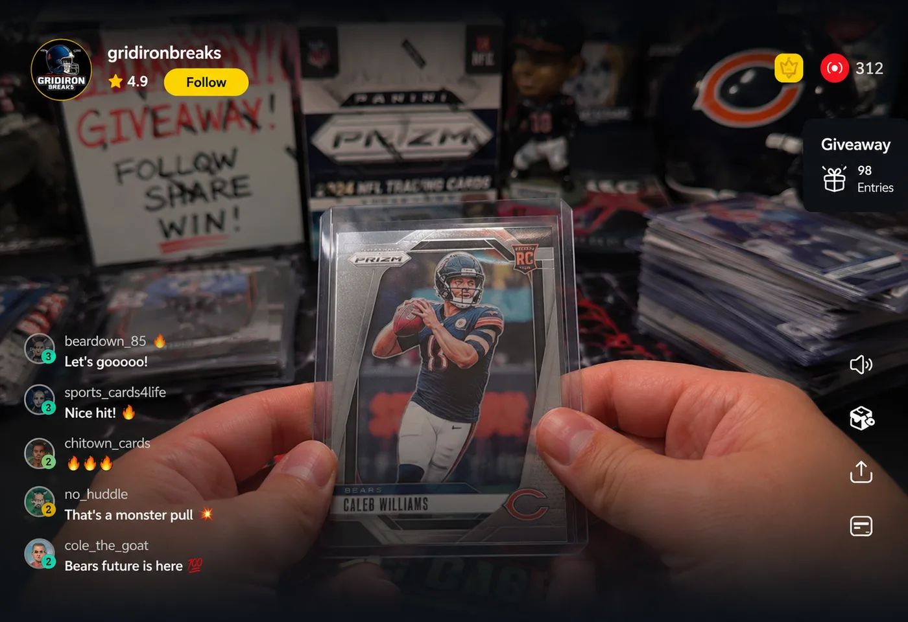
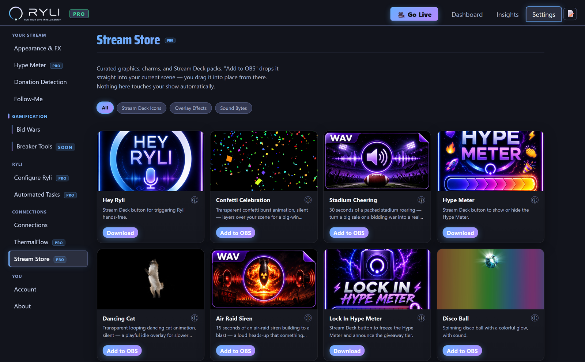
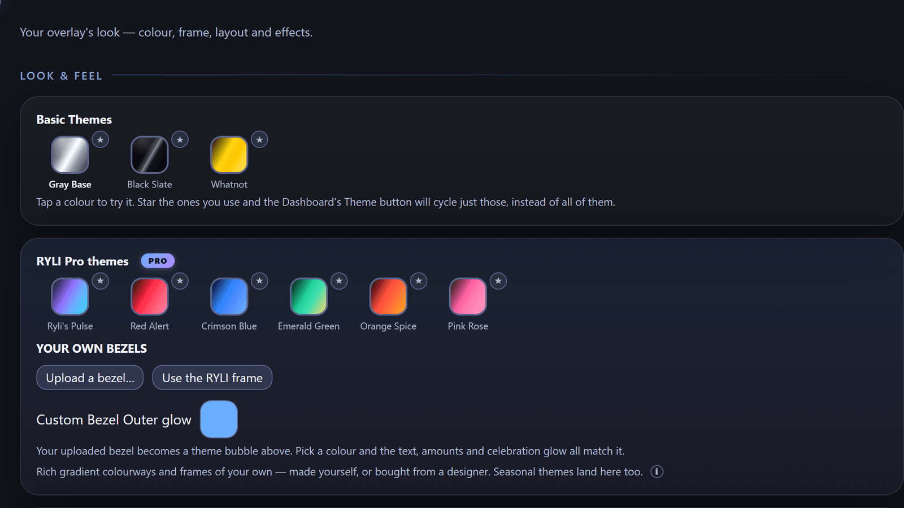
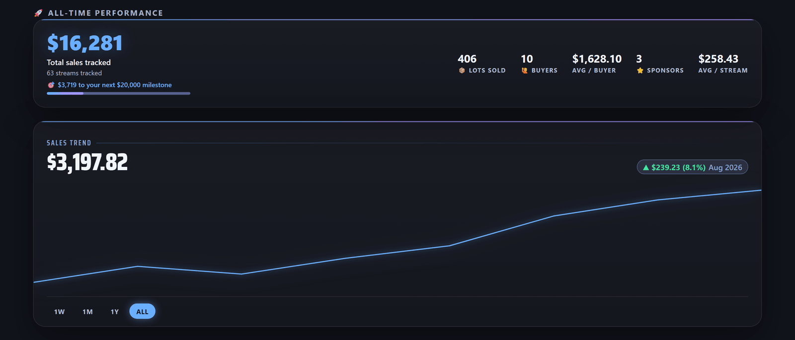

You go live.
RYLI's got the rest.
RYLI is the desktop companion for live shows — reactive OBS overlays, milestone celebrations, a voice co-host that keeps the room talking, and real-time show insights when you’re selling. Whatever you go live for, RYLI runs the rest of it.
RYLI is a Windows desktop app that runs alongside OBS. Open this page on your PC when you’re ready to install — or keep scrolling to see what it does.

Add an interactive Jumbotron to your shows.
Your OBS canvas becomes a live jumbotron that reacts in real time — dropped straight into your stream, no scene-building required.
- Bid battle animations that escalate as buyers go back and forth
- Milestone celebrations — confetti and coin bursts at your own dollar thresholds
- A live hype meter that visualizes the energy of the room PRO
- Your own camera feed, framed right inside the jumbotron
- Rotating promotional banners between lots PRO

Run a break the whole room can read at a glance.
A live board of every spot in your break, on your stream. Who has what, what is still open, and who just landed the Cowboys — without anyone having to ask.
- Pick a league and every spot arrives with the real team names and colours — football, basketball, baseball, hockey, soccer, divisions included
- Upload your own team logos, and they stay with that team on every board you build afterwards
- Mini-game signs on screen: Stash or Pass, See 2 Pick 1, Pick Your Team and Random Team
- Ryli calls it out loud — “@buyer is on the Cleveland Browns” — the moment a spot settles
- A decision clock that prompts without cutting anyone off: at zero the sign says TIME and stays up until you clear it
- Assign, clear and re-roll from your dashboard — and if you let her, RYLI does it on Whatnot for you
Already built your break on Whatnot? RYLI will match your board to it — the teams, the spot count, and everyone who has already bought in.
Built to be used mid-show.
Two tools you run without stopping your stream — one to make the room erupt on cue, one to control everything without ever leaving your Whatnot tab.
Whatnot is watching your room. Give it something to see.
Whatnot's own engineering team has published that user actions — including chats and reactions — are counted in real time and fed to the service that ranks which livestreams get promoted. In their words, they want to “promote livestreams to our users when the most exciting things are happening at that moment.”
The Hype Meter is how you make that moment happen on cue.
- Press one key — a bar and a countdown appear on your stream
- Chat fills it by spamming emojis. The higher it climbs, the bigger the giveaway
- A live counter shows how many different people are joining in. Whatnot counts distinct users, so that's the number that matters
- At zero it locks itself in and Ryli announces the prize out loud
- No giveaway budget? Run it in hype-only mode and just get the room loud
Runs from a hotkey or straight from the RYLI panel inside your Whatnot window — no Stream Deck needed. Whatnot has never published a link between any single action and For You placement, and RYLI never simulates engagement: every tap and message is a real viewer.
Run the whole show without ever leaving it.
While you stream you're watching your own Whatnot page — not the RYLI app in another window. So RYLI puts her controls where you're already looking: a small panel drawn straight into your Whatnot tab. Only you can see it. It's painted locally in your browser, so nothing reaches Whatnot and viewers never see a thing.
- Launch the Hype Meter, fire a chat announcement, or mute Ryli — one tap, eyes still on your show
- A green dot on every automation that's currently armed, so you can see what's running at a glance
- No Stream Deck and nothing to memorise — the buttons do exactly what the hotkeys do
- Drag it anywhere, collapse it to a single orb, or switch it to a slim bar that stays out of your way
- If RYLI ever stops responding it greys itself out, rather than showing you a green light that's lying
Included with RYLI. Pro automations stay Pro — but muting Ryli is always free, because you have to be able to silence anything playing over your own show.
A whole broadcast team, in one interactive space.
Three free themes to get your first show looking sharp, six premium themes for the full jumbotron treatment — plus a growing Stream Store of overlay effects and Stream Deck packs, one click from live.

Transparent effects that drop straight into your scene.
Branded button packs for your hotkeys.
Audio built right into your effects.
New drops over time, no app update required.

Real Time Progress Tracking
After every show, RYLI turns raw sales into a plan — so you can stay connected to your community, not just track a number. All-time performance and live show stats are free forever; the people behind those numbers are a Pro upgrade away.
- All-time performance and live show stats — free, always
- Top buyers and lifetime spender leaderboards — Pro
- Suggested outreach: VIPs who've gone quiet, loyal light spenders worth a nudge, new fans worth a thank-you — Pro
- Computed locally from your own show history — nothing leaves your PC

Hands-free show intel, on command.
Press a hotkey and ask Ryli anything about tonight’s show — she answers instantly from your real tracked data, not a guess. She’ll also save a spoken note (“remind me to…”) and read it back whenever you ask.
- Hotkey-triggered — reliable, no fumbling for a phone or keyboard
- “How many lots sold tonight?” “Who’s my top spender?” — answered live, from your actual numbers, zero guesswork
- Voice notes: “Hey Ryli, remind me to…” — saved and read back on request
- Optional: connect your own research key so Ryli can look up real product and market info live on air
- Experimental spoken “Hey Ryli” wake word, layered on top of the hotkey — currently in beta
Every sale, printed instantly.
The moment a lot sells, ThermalFlow sends a ready-to-pack label straight to your printer — lot number, item, buyer, and price, no keyboard, no breaking your flow.
- Prints automatically the instant a real sale confirms — no manual entry
- Add your shop logo and a short note or contact line to every label
- Works with any printer your Windows PC already recognizes — DYMO, Zebra, Rollo, iDPRT, and more
- Also supports compact direct-USB thermal label printers — no driver hunting
Requires a connected label printer. Off by default — turn it on anytime in Settings. Windows only.
One overlay. Two kinds of live.
RYLI runs as an OBS browser source, so it goes wherever OBS goes. What changes is how much of your show she can read.
Whatnot sellers
RYLI reads your own show and reacts to it as it happens — the full toolkit.
- Bids, sales and buyer names tracked live from your own Whatnot show
- Leaderboards, bid battles and milestone celebrations that fire on real sales
- Insights, Breaker Tools, the Hype Meter and instant label printing
- Everything in the streamer column, too
One thing to know: start your show with RYLI’s own launch button. She can only read a window she opened herself — a show you start in your own browser is invisible to her.
Twitch, YouTube, anywhere
Pick “I stream, but don’t sell live” during setup and the sales pages stay out of your way. Nothing to connect.
- The full jumbotron overlay, your camera framed inside it, and your own bezel artwork
- Every theme, sound pack and Stream Store effect
- Ryli’s voice — ask her anything, hands-free, and she answers out loud PRO
- The ticker rail and jumbotron cards, running on your own schedule
Being straight with you: RYLI can’t read Twitch chat yet, so live-reacting leaderboards and celebrations have nothing to feed on. That connection is what we’re building next. Everything above works today.
Live in under 5 minutes.
No technical setup, no manual OBS configuration — the onboarding wizard does it for you.
Activate
Start your 10-day free trial, no credit card gymnastics.
Connect OBS
One tap auto-creates the RYLI overlay source in OBS for you.
Pick a theme
Visual quality and voice auto-tune to your PC's hardware.
Go live
RYLI reacts to your show in real time from here on out.
Free forever. Pro when you're ready.
Enjoy RYLI free in your shows, no credit card required.
Core Overlay
Everything you need to get your first show looking sharp — stays free, no trial clock.
- Ryli announces your bids, milestones, and wins automatically
- Live leaderboard overlay + milestone celebrations
- 3 base themes (Gray Base, Black Slate, Whatnot)
- Your face cam live in the jumbotron
- A scrolling ticker rail — one message of your own, plus a RYLI line
- One-tap OBS auto-connect wizard
- Live show stats and all-time performance in Insights
- Stream Store browsing
No card, ever.
Unlock Everything
Ryli, your full voice co-host, premium themes, top-tier FX, and everything a serious seller runs on.
- Breaker Tools — a live board for team breaks, with mini-game signs, your own team logos, and Ryli calling out who landed which team
- Talk to Ryli — hands-free Q&A, voice notes, optional live research
- Top buyers, Your People, and Suggested outreach in Insights
- 6 Premium Themes + Ultra FX
- Custom ad-banner uploads
- Stream Store downloads, one-click add to OBS
- Hype Meter — engagement tools
- Upload your own custom skins
- Ticker rail: all three messages, and the RYLI line comes off
- Advanced automated tasks — auto auctions, auto giveaways, scheduled chat announcements, and Ryli reading viewer questions aloud
- ThermalFlow — print a label to a USB printer the instant a lot sells
20% off your first month · cancel anytime
Before you go live.
Does RYLI replace OBS?
Is there a complete setup guide?
Do my viewers need to install anything?
Is my show data private?
Is RYLI Whatnot-only?
Does RYLI work on Twitch?
What are Breaker Tools?
Does RYLI run on Mac?
What happens after my free trial?
Run your live. Intelligently.
Free forever to get started — bring RYLI to your next show.
Download NowGet RYLI for PC